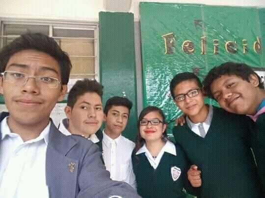
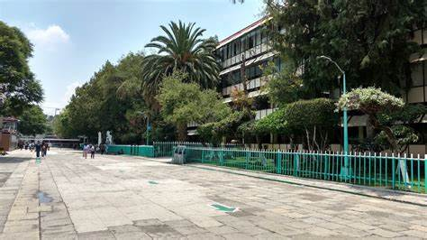
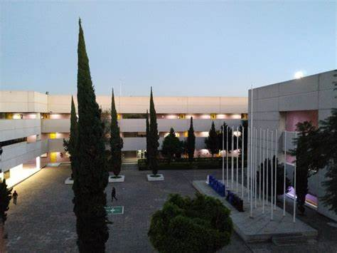

Secundaria Vasco de Quiroga 232Esta es la secundaria en la que siempre quise estudiar ya que todos mis familiares estudiaron ahí, hice un pequeño examen de admisión y logré quedarme. Lo más destacable de mi paso por la secundaria fueron claramente mis amigos, ya que gracias a ellos tuve una gran experiencia y me diverti mucho, no destaco los estudios ya que en ese entonces lo que menos me importaba era estudiar, sólo quería divertirme con mis amigos y jugar videojuegos. Aquí comenzaron mis intereses aumentaron, ya que estaba en un taller de informática, en el cual apesar de no hacer nada, tenia un amigo que si sabía muchas cosas y de el aprendí muchas cosas. Al final tuve que ponerme a estudiar por que sabía que no tenia los conocimientos suficientes para hacer mi examen de admisión y entrar a la escuela de nivel medio superior que tuve. |
 |
|  |
CECyT 2 Miguel BernardSin duda una de las mejores momentos como estudiantes, ya que estudiando para el examen de admisión un mes antes
ya que me di cuenta que no sabía nada, logre demostrarme a mi mismo que podría lograr lo que quisiera si me
esforzaba lo suficiente por lo que queria. Apesar de esto, el primer semestre fue horrible para mi, ya que fue un
cambio de ritmo enorme, esto debido a que en la secundaria estaba acostumbrado a no trabajar mucho. Por el contrario,
en la vocacional fue todo lo contrarío y no logre acostumbrarme al cambio, por lo que terminé reprobando muchas materias
pero me esforce lo suficiente para pasarlas en ets o extras. Despues de esto, logré acostumbrarme al ritmo que se llevaba
y comencé a disfrutar del estudio y la convivencia con mis amigos. |
Escuela Superior de CómputoDespués de muchos meses de estudio para prepararme para el examen de admisión, logre conseguir un lugar en ingenieria
en computación en la facultad de ingeniaria de la UNAM y para la misma carrera en UAM cuajimalpa. No obstante, yo queria
estudiar IIA en ESCOM y despues de darle muchas vueltas terminé escogiendo de nuevo al IPN. |
 |